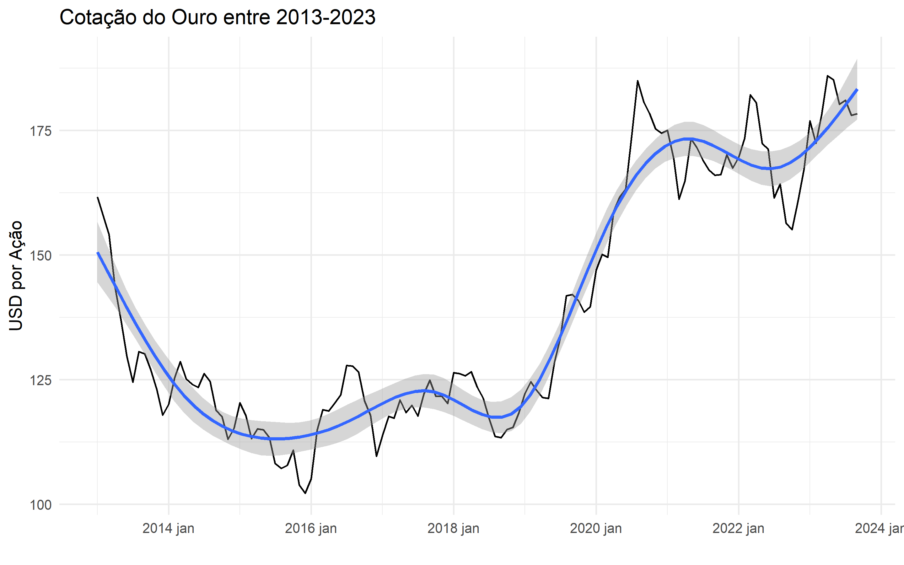
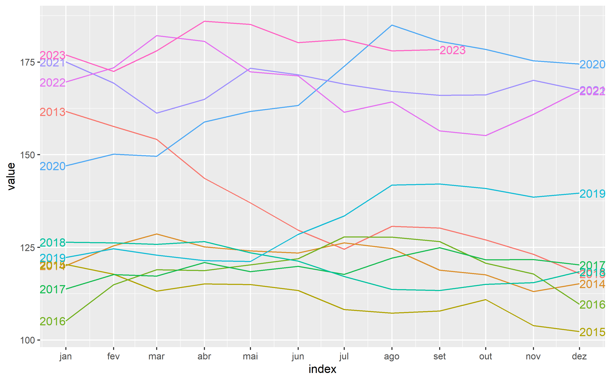
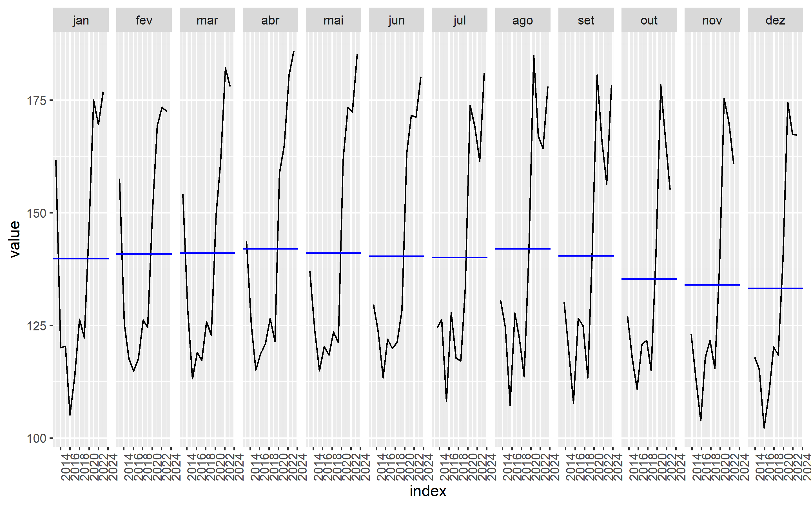
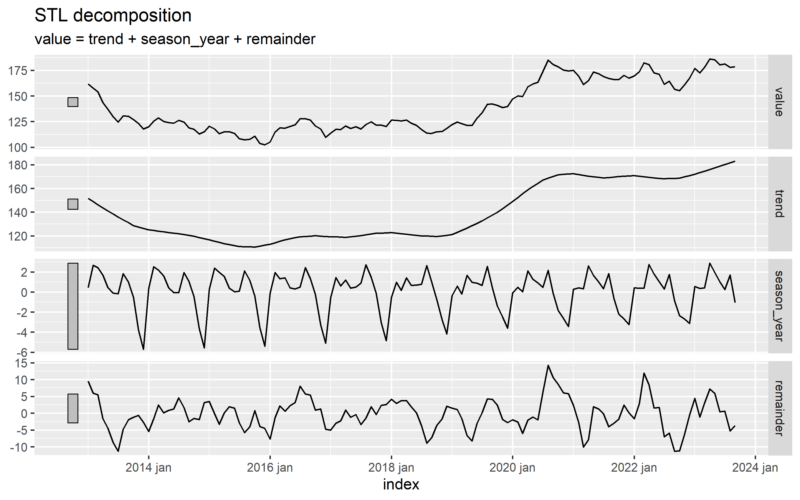
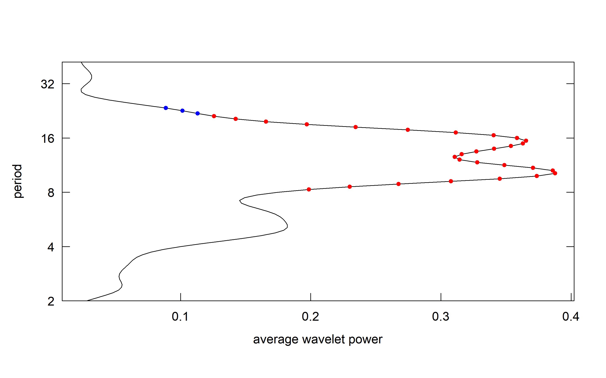
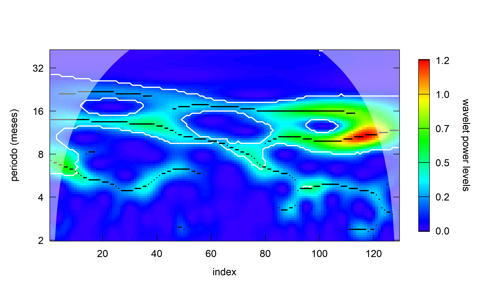
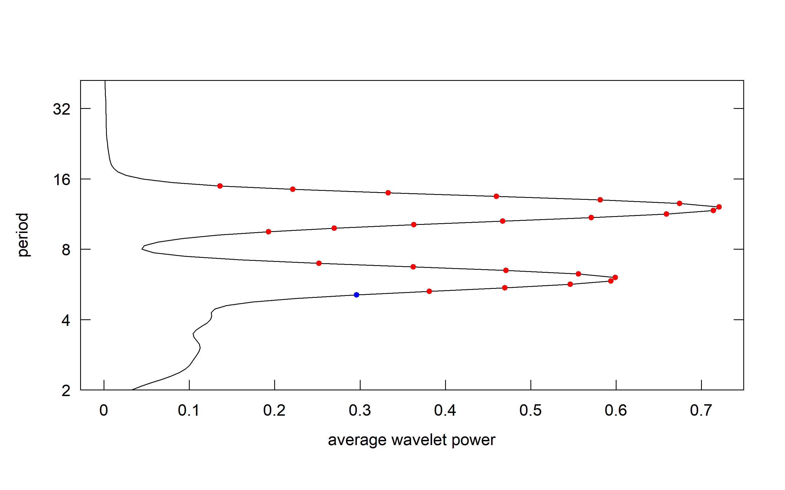
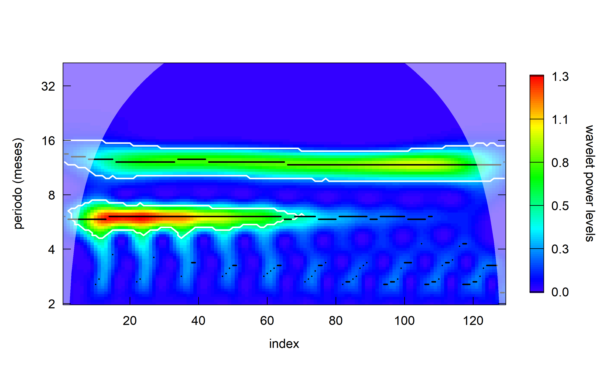
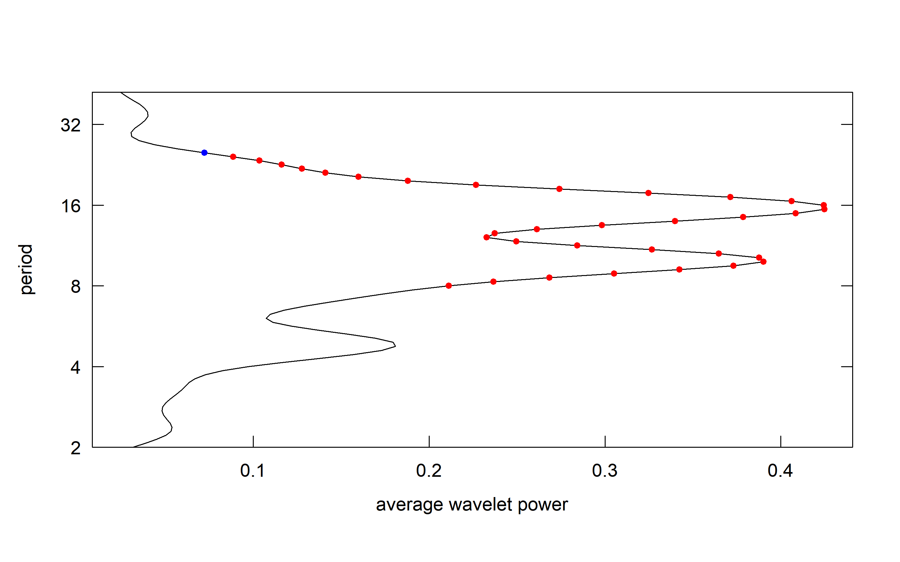
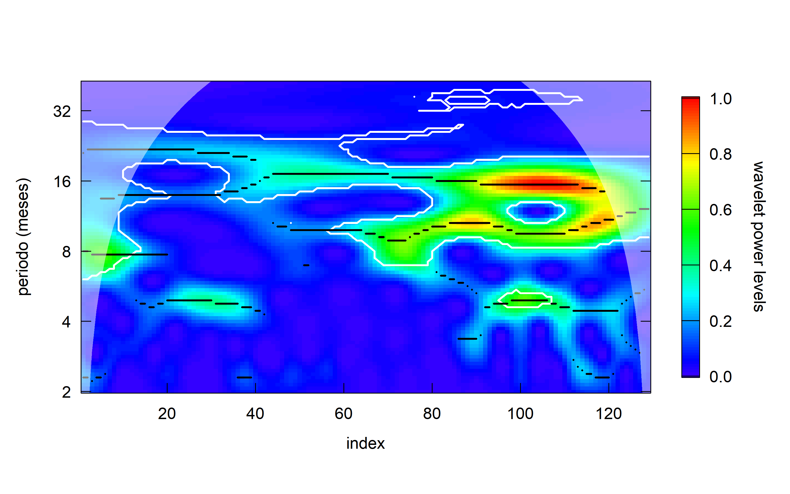

Introdução
Este é o primeiro post de uma série dedicada ao desenvolvimento, de maneira simplificada, de um projeto de ciência de dados. Dividido em várias postagens e com ênfase variada nos tópicos, abordaremos os seguintes temas:
- Definição do Problema
- Aquisição de Dados
- Limpeza de Dados
- Análise Exploratória
- Pré-processamento de Dados
- Modelagem
- Avaliação dos modelos
- Implantação dos modelos
- Monitoramento e Manutenção
- Comunicação de Resultados
Nos dois primeiros artigos, abordarei os quatro primeiros itens, dando um enfoque na análise exploratória. As etapas de 5 a 7 serão discutidas em postagens subsequentes, nas quais uma ampla variedade de modelos estatísticos e de IA serão utilizados. O modelo que apresentar o melhor desempenho será implementado em produção e monitorado (tópicos 8, 9 e 10).
Definição do Problema
Conforme o título deste post sugere, esta série estará relacionada à cotação do ouro, mais especificamente na criação de um modelo preditivo para o SPDR Gold Shares (GLD).
Carregando os Pacotes Utilizados
Neste projeto, farei uso de uma ampla variedade de pacotes e, consequentemente, suas respectivas funções para realizar as tarefas necessárias. No contexto do R, é comum carregar os pacotes próximos às linhas onde suas funções serão utilizadas. No entanto, isso nem sempre é viável, o que pode tornar a identificação da origem das funções confusa. Isso não apenas dificulta a leitura do código por terceiros, mas também pode complicar a revisão do próprio autor.
Para tornar mais fácil identificar a origem das funções em uso, o R oferece uma opção útil: nome_do_pacote::nome_da_função(). Esse padrão é considerado uma boa prática no R para indicar a origem das funções e será adotado em todas as próximas postagens, sempre que necessário.
Para simplificar o processo de carregamento dos pacotes, utilizaremos a função p_load(), que faz parte do pacote pacman. Essa função permite carregar as bibliotecas de forma centralizada e eficiente.
pacman::p_load(tidyquant, tsibble,fabletools,fabletools,timetk,fpp3,
tibbletime,feasts, tidyverse, tseries, WaveletComp,
tsoutliers, DT, plotly, kableExtra)Antes de continuar, vou criar uma função personalizada usando o pacote kableExtra para formatar as tabelas que serão apresentadas neste e nos próximos posts. Os argumentos desta função são os dados a serem tabulados e o título da tabela.
set_tab <- function(dados_tab, cap_tab){
kableExtra::kable( x = dados_tab,
booktabs = TRUE,
escape = FALSE,
digits = 4,
caption = cap_tab) |>
kableExtra::kable_styling(latex_options =
c("striped", "hold_position"),
position = "center",
full_width = F,
bootstrap_options =
c("striped", "hover", "condensed", "responsive"))
} Aquisição dos Dados
Os dados utilizados nesta série são provenientes do Yahoo Finanças. Para acessá-los, utilizaremos a função tq_get do pacote tidyquant. Por padrão, essa função utiliza a opção stock.prices, que retorna os valores de ‘open’, ‘high’, ‘low’, ‘close’, ‘volume’ e ‘adjusted’ do Yahoo Finanças. No entanto, é possível obter outras opções, como dividendos ou informações sobre ‘split’ de ações, além de dados de outras fontes.
Quando utilizamos o padrão da função e informamos apenas o símbolo da ação desejada, todos os dados disponíveis para o período de tempo completo são retornados.
# Obter dados da ação de ouro (código GLD)
gold_data <- tidyquant::tq_get("GLD")Limpeza dos Dados
A etapa de limpeza de dados é um processo fundamental na análise de dados que envolve a identificação, correção e eliminação de erros, inconsistências e valores ausentes em um conjunto de dados. Isso inclui remover duplicatas, preencher lacunas, padronizar formatos e eliminar outliers. A limpeza de dados é crucial para garantir a qualidade e confiabilidade dos dados, pois dados sujos ou corrompidos podem levar a análises imprecisas e conclusões equivocadas. Portanto, essa etapa prepara os dados para análise posterior, assegurando que estejam prontos para serem explorados e modelados de forma eficaz.
Devido a fonte dos dados, Yahoo Finanças, amplamente reconhecida e utilizada tanto na indústria quanto por investidores individuais, podemos antecipar que encontraremos poucos problemas.
Sem mais delongas vamos iniciar a análise dos dados.
Análise Preliminar
Uma vez que os dados foram carregados, podemos começar nossa análise.
Vou começar criando uma tabela para visualizar os dados e utilizando as funções summary e str para obter informações da estrutura dos dados dentro do R e infomrações estatísticas básicas.
gold_data %>%
slice_head(n=5) %>%
set_tab(cap_tab = "Dados Brutos")| symbol | date | open | high | low | close | volume | adjusted |
|---|---|---|---|---|---|---|---|
| GLD | 2013-01-02 | 163.49 | 164.14 | 163.14 | 163.17 | 10431800 | 163.17 |
| GLD | 2013-01-03 | 162.48 | 162.88 | 160.83 | 161.20 | 16117500 | 161.20 |
| GLD | 2013-01-04 | 159.52 | 160.63 | 158.89 | 160.44 | 19179800 | 160.44 |
| GLD | 2013-01-07 | 159.36 | 159.96 | 159.15 | 159.43 | 9361800 | 159.43 |
| GLD | 2013-01-08 | 160.46 | 160.99 | 160.01 | 160.56 | 7694800 | 160.56 |
#base::summary(gold_data)
#utils::str(gold_data)O aspecto mais significativo desses resultados é a irregularidade amostral. Apesar dos resultados da função summary não indicarem a presença de NA’s (valores ausentes), é importante observar que as datas na coluna “date” contêm registros para fins de semana e feriados, que são omitidos pela fonte dos dados. Isso pode resultar em efeitos indesejados e até mesmo tornar inviáveis algumas análises.
Dentre as diversas abordagens para lidar com essa situação, eu vou optar pelo método da reamostragem, onde converteremos nossos dados que possuem uma frequência amostral diária em mensal.
Apesar dessa técnica levar a uma perda de resolução, ela pode proporcionar uma simplificação do processamento e análise, além da diminuição do ruido nos dados. Pontos que serão muito positivos levando em conta o propósito demonstrativo deste post. É importante ressaltar que, dependendo do propósito da análise, a melhor opção seria utilizar o máximo de informação possível e optar pelo “descarte” de parte das informações apenas após uma avaliação mais criteriosa.
Reamostrando os Dados
A realização da reamostragem mencionada implica na criação de médias mensais, o que transformará o conjunto de dados no formato desejado. Os passos necessários para a execução desse procedimento estão explicados nos comentários do código a seguir. A maioria das funções utilizadas a seguir faz parte do pacote dplyr.
gold_data <-
gold_data %>%
# criando variáveis ano e mês para cálculo das médias mensais
mutate(
year = lubridate::year(date),
month = lubridate::month(date)
)%>%
#agrupando os dados pelas variáveis ano e mês
group_by(year,month) %>%
#calculando as médias mensais
summarise(
month_mean = mean(close)
) %>%
#desagrupando os dados
ungroup() %>%
#criando a variável que será usada como index temporal
mutate(
index = tsibble::make_yearmonth(year,month)
) %>%
#renomeando a coluna dos valores
rename(
value = month_mean
) %>%
#selecionando apenas as colunas de interesse
select(index,value) %>%
# transformando os dados em tsibble, formato adequado para os pacotes utilizados
tsibble::tsibble()
#head(gold_data)
#class(gold_data)gold_data %>%
slice_head(n=5) %>%
set_tab(cap_tab = "Médias mensais")| index | value |
|---|---|
| 2013 jan | 161.6733 |
| 2013 fev | 157.6026 |
| 2013 mar | 154.1335 |
| 2013 abr | 143.6223 |
| 2013 mai | 136.9909 |
Pronto, agora os dados estão no formato desejado.
Identificando Outliers
Outliers, ou valores atípicos, são observações em uma série temporal que se desviam significativamente do padrão ou comportamento esperado dos dados em um determinado período de tempo. Eles podem ser causados por uma variedade de razões, incluindo erros de medição, eventos incomuns, mudanças no processo subjacente ou simplesmente flutuações aleatórias extremas. Identificar e lidar com outliers é importante na análise de séries temporais, pois podem afetar negativamente a precisão dos modelos e análises. Considerando que esses dados provêm de plataformas que disponibilizam valores oficiais do mercado de ações, a eventual presença de outliers nesses dados provavelmente estará ligada a eventos notáveis, e não a qualquer tipo de erro.
Há várias abordagens para identificar e tratar outliers em séries temporais. Optei por utilizar o pacote tsoutliers, que oferece uma opção automatizada para identificação desses valores atípicos.
tsoutliers::tso(ts(gold_data$value)) Series:
ARIMA(0,1,1)
Coefficients:
ma1
0.2729
s.e. 0.0826
sigma^2 = 18.77: log likelihood = -368.83
AIC=741.66 AICc=741.76 BIC=747.36
No outliers were detected.Bem, não foi identificado nenhum outlier, o que era esperado, considerando a fonte dos dados e o fato de que eles representam médias mensais, o que implica um certo grau de suavização.
Análise Exploratória
Análise exploratória é um processo essencial na compreensão e interpretação de conjuntos de dados, inclusive nos dados que evoluem ao longo do tempo, comumente referidos como séries temporais. Este tipo de informação demanda uma abordagem particular na busca para desvendar padrões, tendências e características intrínsecas presentes nesses dados sequenciais. Ao explorar visualizações, estatísticas descritivas, análise de autocorrelação e decomposição, entre outras técnicas, os analistas podem identificar relações de dependência, sazonalidades e eventos atípicos, contribuindo para uma compreensão mais sólida do comportamento temporal dos dados. Através dessa exploração minuciosa, a análise exploratória de séries temporais desempenha um papel fundamental na construção de modelos de previsão mais precisos e no embasamento da tomada de decisões.
Gráficos da Série Temporal
Com os dados preparados para análise, vou criar as primeiras visualizações gráfica.
Gráfico das médias mensais
gold_data %>%
ggplot2::ggplot(aes(x=index,y=value))+
geom_line()+
geom_smooth(formula = y ~ s(x, bs = "cs"), method = 'gam')+
labs(title = "Cotação do Ouro entre 2013-2023", )+
xlab("")+
ylab("USD por Ação")+
theme_minimal()
Ao analisar o gráfico das médias mensais, é possível notar que os dados apresentam uma tendência negativa de 2013 a 2016, seguida por um período aparentemente estacionário que se estende até 2019. Após esse período, há uma tendência positiva observada até aproximadamente meados de 2020, seguida por um retorno a uma aparente estacionariedade nos dados. A parte final dos dados parece exibir uma maior volatilidade. Em termos gerais, quando se considera a série temporal como um todo, os dados parecem não ser estacionários. No entanto, esse é um ponto que será discutido e avaliado mais detalhadamente posteriormente.Ao analisar o gráfico das médias mensais, é possível notar que os dados apresentam uma tendência negativa de 2013 a 2016, seguida por um período aparentemente estacionário que se estende até 2019. Após esse período, há uma tendência positiva observada até aproximadamente meados de 2020, seguida por um retorno a uma aparente estacionariedade nos dados. A parte final dos dados parece exibir uma maior volatilidade. Nesta primeira visualização, os dados não apresentam nenhum padrão sazonal ou cíclico evidente. Em termos gerais, quando se considera a série temporal como um todo, os dados parecem não ser estacionários. No entanto, esse é um ponto que será discutido e avaliado mais detalhadamente posteriormente.
Gráficos sazonais
Uma representação sazonal é semelhante a um gráfico temporal, exceto que os dados são plotados em relação às “estações” individuais em que os dados foram observados.
feasts::gg_season(gold_data, labels = "both")
Um gráfico sazonal torna o padrão sazonal subjacente mais visível e é especialmente útil para identificar anos em que esse padrão muda. Neste caso, não há um padrão claro de comportamento, já que diferentes anos apresentam comportamentos distintos. No entanto, parece que, em sua maioria, os valores tendem a cescer durante o início do ano e diminuir na parte final. Além disso, o gráfico destaca o rápido declínio dos valores durante o ano de 2013, o crescimento nos anos de 2019 e 2020, e uma relativa estabilidade nos demais anos.
Uma representação alternativa que enfatiza os padrões sazonais é aquela em que os dados de cada estação são agrupados em mini gráficos temporais separados.
feasts::gg_subseries(gold_data)
Por meio deste gráfico, é possível visualizar um padrão sazonal potencial, com um pico observado em agosto, embora esse padrão não seja muito evidente.
Até o momento, observou-se que os dados apresentam um comportamento complexo e não revelam padrões óbvios, o que torna a construção de modelos preditivos desafiadora e limita sua eficácia, especialmente em projeções de longo prazo.
A seguir, vou aprofundar a análise na tentativa de compreender as estruturas subjacentes aos dados, buscando informações que possam aprimorar a capacidade preditiva dos modelos futuros.
Decompondo a Série Temporal
A decomposição de séries temporais é uma técnica fundamental na análise de dados temporais, permitindo separar uma série temporal em seus componentes principais para melhor compreensão e modelagem. Existem várias abordagens para realizar essa decomposição, sendo as mais comuns as seguintes:
Decomposição Aditiva: Nessa abordagem, a série temporal é dividida em três componentes: tendência, sazonalidade e ruído. A tendência representa a evolução de longo prazo da série, a sazonalidade corresponde a padrões repetitivos em intervalos fixos de tempo e o ruído representa as flutuações aleatórias. A decomposição aditiva é útil quando as variações em cada componente são independentes do nível da série.
Decomposição Multiplicativa: Na decomposição multiplicativa, a série temporal é dividida em tendência, sazonalidade e ruído, mas em termos multiplicativos. Isso significa que os componentes são representados como proporções do nível da série. Essa abordagem é apropriada quando as variações são proporcionais ao nível da série, como em casos onde o crescimento é exponencial.
Decomposição STL (Seasonal and Trend decomposition using LOESS): A decomposição STL é uma técnica avançada que utiliza alisamento local (LOESS) para decompor a série em tendência, sazonalidade e resíduos. Ela é especialmente útil para séries com sazonalidade não constante ao longo do tempo ou com tendências não lineares.
Decomposição por Componentes Independentes (ICA): A ICA é uma técnica avançada que busca separar uma série temporal em componentes independentes, cada um representando uma fonte de variação única. Isso pode ser útil quando se deseja identificar e isolar padrões específicos em dados complexos.
A escolha da abordagem de decomposição depende da natureza dos dados e dos objetivos da análise. Devido às características complexas apresentadas pelos dados, a técnica de decomposição escolhida foi o STL, comumente utilizada para identificar tendências de longo prazo e padrões sazonais, inclusive permitindo múltiplos períodos sazonais.
Modelo STL (Seasonal-Trend Decomposition Using LOESS)
Antes de realizar a decomposição dos dados vou apresentar em carater didático o funcionamento do modelo STL.
O modelo STL desagrega uma série temporal em três componentes principais: tendência (Trend), sazonalidade (Seasonal), e resíduos (Remainder). Ele faz isso separadamente para cada componente, usando suavização LOESS (um método de suavização não paramétrica) para estimar cada parte. Sendo especialmente útil quando a sazonalidade em seus dados varia com o tempo. Isso o torna útil para séries temporais com sazonalidades irregulares ou não lineares. O STL é principalmente usado para entender a estrutura de uma série temporal e não para fazer previsões diretamente. Entretanto existem diferentes técnicas de modelagem voltadas para previsão que utilizam como parte do seu processo a decomposição dos dados através de modelos STL.
O modelo STL pode ser descrito da seguinte forma:
O modelo STL desagrega uma série temporal \(y_t\) em três componentes principais: tendência (\(T_t\)), sazonalidade (\(S_t\)) e resíduos (\(R_t\)) usando o método LOESS.
Equação de Decomposição:
\[y_t = T_t + S_t + R_t\]
Equação da Tendência:
\[T_t = \mu_t + \mu_{t-1} + \ldots + \mu_{t-d+1}\]
Equação da Sazonalidade:
\[S_t = \gamma_{t-m} + \gamma_{t-2m} + \ldots + \gamma_{t-km}\]
Equação dos Resíduos:
\[R_t = y_t - T_t - S_t\]
Peso LOESS (w):
\[w_i = \begin{cases}
(1 - \left(\frac{h}{|t - x_i|}\right)^3)^3 & \text{se } |t - x_i| \leq h \\
0 & \text{se } |t - x_i| > h
\end{cases}\]
onde:
\(\mu_t\) refere-se à estimativa da tendência na época \(t\).
\(d\) é o parâmetro que determina a largura da janela de suavização usada para estimar a tendência.
\(\gamma_{t-km}\) refere-se à estimativa da sazonalidade na época \(t\) com um atraso de \(m\), onde \(m\) é a periodicidade sazonal.
\(w_i\) é o peso calculado usando a função de tri-cubo. Esta função atribui pesos próximos a 1 para pontos de dados que estão próximos ao ponto de interesse \(t\) (dentro da janela de suavização \(h\)) e atribui pesos decrescentes rapidamente para pontos de dados mais distantes.
Após a compreensão do funcionamento, vou processeguir com o ajuste do modelo aos dados e, em seguida, com a criação dos gráficos para visualização dos resultados.
#Ajustando o modelo STL aos dados
fit <-
gold_data %>%
fabletools::model(
feasts::STL(value)
) %>%
fabletools::components() #Gerando os gráficos do modelo STL
fit %>% fabletools::autoplot()
Os resultados indicam a presença de componentes relacionados a tendência, sazonalidade e ruído. O segundo gráfico (trend) evidencia as alterações de tendência descritas no início da análise exploratória. Já o terceiro gráfico (season_year) apresenta uma aparente mudança no comportamento sazonal, que gradualmente modifica seu padrão. O último gráfico (remainder), que teoricamente deveria representar ruído branco, aparenta conter estruturas potencialmente relevantes para a compreensão dos dados, principalmente em sua parte final.
O próximo passo nesta Análise Exploratória consistirá na análise espectral, cujo propósito é aprofundar a compreensão do comportamento das potenciais componentes periódicas identificadas nos dados. Contudo, antes de prosseguir com as análises mencionadas, quero verificar se a componente remainder pode ser realmente considerada como ruído branco. Para esta finalidade, farei uso do teste de Ljung-Box, que avalia a existência de correlações significativas nos dados.
Teste Ljung-Box
O teste de Ljung-Box é usado para verificar a presença de autocorrelação nos resíduos de um modelo de séries temporais. Matematicamente, o teste pode ser representado da seguinte forma:
A estatística de teste Q para o teste de Ljung-Box é definida como:
\[Q = n(n+2) \sum_{k=1}^{h} \frac{\hat{\rho}_k^2}{n-k}\]
Onde:
\(Q\) é a estatística de teste.
\(n\) é o número de observações na série temporal.
\(h\) é o número máximo de atrasos considerados.
\(k\) é uma variável que varia de 1 até \(h\).
\(\hat{\rho}_k^2\) representa as estimativas de autocorrelação nos atrasos \(h\) nos resíduos.
A fórmula calcula a estatística Q como a soma ponderada dos quadrados das autocorrelações estimadas nos atrasos \(k\), onde os pesos são proporcionais a \((n-k)^1\).
O valor de \(Q\) segue uma distribuição qui-quadrado com \(h\) graus de liberdade sob a hipótese nula de que não há autocorrelação nos resíduos.
Este teste é amplamente utilizado na análise de séries temporais para garantir que os resíduos de um modelo se comportem como um ruído branco, o que é uma suposição importante para muitos métodos estatísticos e de previsão.
fit %>%
fabletools::features(remainder, ljung_box, lag = 18) %>%
set_tab(cap_tab = "Teste ljung-box")| .model | lb_stat | lb_pvalue |
|---|---|---|
| feasts::STL(value) | 145.3812 | 0 |
O resultado do teste rejeita a hipótese nula de que não há autocorrelação nos resíduos. Assim, não podemos considerar que a componente não possui informações relevantes.
Dados os resultados obtidos até o momento, vou realizar análises espectrais nos dados originais, bem como nas componentes sazonais e de ruído identificadas pelo modelo STL. Embora esse processo possa parecer trabalhoso e, à primeira vista, redundante, essa avaliação detalhada pode fornecer informações valiosas sobre os dados.
Análises Espectrais
A análise espectral é uma técnica fundamental em processamento de sinais (série temporal) que envolve decompor os dados em suas componentes de frequência. Isso é alcançado por meio da transformada de Fourier ou outras técnicas similares, permitindo que o sinal seja representado no domínio da frequência e não somente no domínio do tempo. A análise espectral é valiosa para identificar padrões periódicos, identificar frequências dominantes, detectar sazonalidades e compreender a estrutura subjacente de um sinal. Em muitos casos, a análise espectral pode revelar informações ocultas nos dados que não são facilmente perceptíveis na forma temporal original.
Os métodos de análise espectral utilizadas serão a análise de Fourier e de wavelets.
Análise de Fourier
A análise de Fourier é uma técnica matemática poderosa usada para decompor sinais complexos em suas componentes de frequência, revelando os diversos padrões de oscilação que os compõem. Essa abordagem é fundamentada na transformada de Fourier, cujos resultados são geralmente representados pelo espectro de potência, que descreve a distribuição de energia em diferentes frequências. O resultado é um gráfico de amplitude em função da frequência, de interpretação direta e intuitiva.
A transformada de Fourier contínua de uma função(t) é dada por:
\[X(f) = \int_{-\infty}^{\infty} x(t) \cdot e^{-j2\pi ft} \,dt\]
Onde:
\(X(f)\) é a Transformada de Fourier do sinal \(x(t)\) no domínio da frequência \(f\).
\(x(t)\) é o sinal no domínio do tempo.
\(j\) é a unidade imaginária.
Calculada a tranformada de Fourier \(X(f)\) do sinal \(x(t)\), o espectro de potência \(P(f)\) é dado como:
\[P(f) = |X(f)|^2\]
Análise Wavelets
Conforme mencionado anteriormente um dos métodos escolhido para análise espctral foi a análise via wavelets. Baseada em funções wavelets, que são pequenas ondas (ou “wavelets”), essa técnica tem como principal caracteristica uma duração finita no tempo, garantindo sua localizadas no domínio do tempo e da frequência. Uma vantagem em relação a técnica tradicional da transformadas de Fourier, que representam sinais como uma combinação de senos e cossenos com duração infinita no tempo, indicando apenas a presença das componentes periódicas e não o seu comportamento ao decorrer do tempo de registro.
Semelhante à técnica anterior, a análise via wavelets é baseada na transformada wavelet, cujos resultados são normalmente representados por meio de um “escalograma de wavelets”. Essa técnica é frequentemente empregada na análise wavelet para representar como a energia do sinal varia em diferentes escalas ao longo do tempo. O escalograma é uma representação bidimensional, em que o eixo horizontal denota o tempo, o eixo vertical denota a frequência e a intensidade do sinal é codificada por cores ou tons de cinza.
A transformada de wavelet contínua pode ser definida como o produto interno entre o sinal original e uma função wavelet mãe que é transladada e escalonada. A fórmula geral para isso é a seguinte:
\[W(a, b) = \int_{-\infty}^{\infty} x(t) \cdot \psi_{a,b}(t) \, dt\]
onde:
\(W(a, b)\) é o coeficiente da transformada de wavelet para os parâmetros de escala \(a\) e deslocamento \(b\).
\(x(t)\) é o sinal de entrada.
\(\psi_{a,b}(t)\) é a wavelet mãe escalonada e transladada de acordo com os parâmetros \(a\) e \(b\). Cada coeficiente do escalograma é calculado como o módulo ao quadrado dos coeficientes da Transformada Wavelet:
\[S(a, b) = |W(a, b)|^2\]
onde:
\(S(a, b)\) é o escalograma na escala \(a\) e posição \(b\).
\(W(a, b)\) são os coeficientes da transformada de wavelet para os parâmetros de escala \(a\) e deslocamento \(b\).
Remoção da Tendência e Normalização dos Dados
Antes de avançarmos com a análise espectral, é imprescindível realizar duas etapas cruciais: a remoção da tendência, caso esta esteja presente, e a normalização dos dados. Para atingir esses objetivos, utilizaremos a componente ‘trend’, gerada pelo modelo STL, a qual será subtraída dos dados originais. Posteriormente, empregaremos a função ‘scale’ para centralizar e normalizar os dados, assegurando que estejam preparados de forma adequada para a análise subsequente.
Lembrando que esses procedimentos serão aplicados apenas para os dados originais. As componentes ‘season’ e ‘remainder’, provenientes do modelos STL, já estão livres de tendência e centrados.
detrend_ts <-
fit %>%
mutate(
value = value - trend,
value = scale(value)
) %>%
select(index,value)
detrend_ts %>%
slice_head(n=5)%>%
set_tab(cap_tab = "Dados sem tendência e normalizados")| index | value |
|---|---|
| 2013 jan | 1.93360712 |
| 2013 fev | 1.67668880 |
| 2013 mar | 1.53406325 |
| 2013 abr | 0.05350123 |
| 2013 mai | -0.72788956 |
Pronto, os dados estão prontos para as análises espectrais!
Resultados Análises Espectrais
Para realizar as análises descritas será utilizado o pacote WaveletComp. Os códigos usados são os mesmos para todos os dados e serão apresentados apenas para os dados originais.
Para obtenção do espectro de potência será utilizada a função wt.avg, que retorna as médias da potência de wavelet ao longo do tempo. Equivalente ao espectro de potência obtido através da Transformada de Fourier.
Os resultados serão apresentados na seguinte ordem: dados originais, componente ‘season’, e componente ‘remainder’ do modelo STL.
Dados originais
O código abaixo realiza o cálculo da transformada wavelet e salva seus resultados em um objéto, nomeado w.ouro.dt, que será utilizado na criação dos gráficos desejádos.
# Calculando a transformada wavelet dos dados sem o trend
w.ouro.dt <-
WaveletComp::analyze.wavelet(
detrend_ts,
"value",
loess.span = 0,
verbose=FALSE,
date.format = "%Y-%m-%d"
)Uma vez calculada a transformada wavelet, podemos criar os gráficos do espectro de potência e escalograma.
Para a criação do gráfico do espectro de potência, o pacote WaveletComp possui a função wt.avg.
#Plot do gráfico de espectro de potência ad
WaveletComp::wt.avg(w.ouro.dt, show.legend = FALSE)
O espectro de potência dos dados originais revela dois picos estatisticamente significativos, ocorrendo aproximadamente em 12 meses e 16 meses, enquanto um terceiro pico em torno de 6 meses não alcança significância estatística. No entanto, os resultados apresentam uma resolução limitada.
Vamos analisar o comportamento dessas componentes ao longo do tempo. Para criar o escalograma, o pacote ‘WaveletComp’ disponibiliza a função wt.image.
# monthly.ticks <- seq(as_date("2013-01-01", format = "%Y-%m-%d"),
# as_date("2023-09-22", format = "%Y-%m-%d"),
# by = "month")
# monthly.labels <- strftime(monthly.ticks, format = "%b %Y")
#Plot do escalograma de wavelet
WaveletComp::wt.image(
w.ouro.dt, color.key = "interval",
legend.params = list(lab = "wavelet power levels"),
periodlab = "periodo (meses)",
show.date = FALSE, date.format = "%Y-%m-%d"#,
# spec.time.axis = list(at = monthly.ticks, labels = monthly.labels,
# las = 2)
)
O resultado do escalograma apresenta aproximadamente as mesmas componentes espectrais presentes do espectro de potência. A componente de aproximadamente 6 meses aparece fora da faixa de confiabilidade estatística, de modo descontínuo e com baixos valores de escala. As componenetes de aproximadamente 11 meses e 16 meses aparecem dentro da margem de 95% de confiabilidade estatística, contudo os resultados não possuem uma boa resolução. Estas componentes exibem variação em suas faixas de periodicidades e variações nos seus valores de escala. Apresentando seus valores mais expressivos (>0,5) apenas na parte final dos dados.
Componente ‘season’

Em contraste aos resultados anteriores, as componentes agora estão definidas com maior clareza e estão concentradas nos períodos de 6 meses e 12 meses. Notavelmente, o modelo STL não conseguiu capturar a componente que ocorre aproximadamente a cada 16 meses, presente nos dados originais.

Devido à forma como a componente ‘season’ foi construída, ela não contém o ruído presente nos dados originais, tornando as componentes espectrais muito mais evidentes. A componente anual mantém um comportamento uniforme ao longo de todo o período de registro. Por outro lado, a componente de 6 meses exibe valores elevados até a metade do período de registro, após o qual desaparece do sinal.
Componente ‘remainder’

Embora seja considerada como resíduo pelo modelo STL, os resultados do espectro de potência são notavelmente semelhantes aos dos dados originais. Eles mostram componentes espectrais em torno de 12 meses e 16 meses, dentro da margem de confiabilidade estatística, enquanto uma componente de aproximadamente 6 meses fica fora dessa margem. Ao contrário dos resultados dos dados originais, as componentes apresentam uma definição mais nítida entre os picos, e a componente de aproximadamente 16 meses exibe uma maior concentração de energia em comparação com as outras componentes.

O escalograma da componente ‘remainder’ é surpreendentemente semelhante ao escalograma dos dados originais. Isso é inesperado, uma vez que teoricamente o modelo STL deveria ter removido não apenas a tendência, mas também a componente sazonal.
Conclusão
Na primeira parte, abordamos de maneira simplificada as etapas iniciais de um projeto de ciência de dados, chegando a um ponto crucial, a análise exploratória. Como este post está se tornando extenso, deixarei as análises restantes para uma segunda publicação. Antes disso, vamos recapitular os pontos mais relevantes.
Após a decomposição dos dados utilizando um modelo STL foi identificado a presença das componentes ‘trend’, ‘season_year’ e ‘remainder’.
Para aprofundar nosso entendimento dos padrões sazonais, analisamos os dados originais (sem a tendência) juntamente com as componentes geradas pelo modelo STL utilizando métodos de análise espectral. Essa análise revelou evidências da presença de componentes periódicas, o que pode contribuir para uma maior capacidade de previsão e tornar nossos modelos mais eficazes e robustos.
É importante destacar alguns pontos em relação aos resultados do modelo STL, que, como mencionado anteriormente, serve como base para outros tipos de modelos de previsão. A não captura da componente com cerca de 16 meses e a presença parcial de uma componente periódica de 6 meses devem ser avaliadas com cautela, uma vez que as previsões são geralmente obtidas aplicando um método de previsão não sazonal aos dados ajustados sazonalmente e, em seguida, reintroduzindo a sazonalidade usando apenas o último ano da componente sazonal.